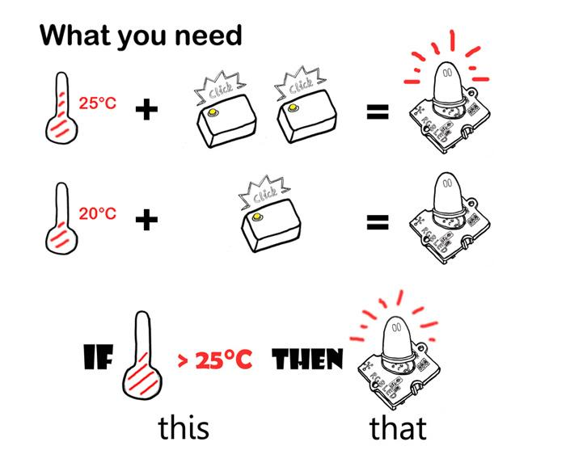
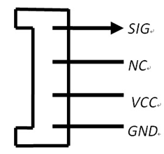

Grove - Node is a simple and flexible electronic module to connect physical objects. It's based on the idea of IFTTT (IF-This-Then-That). It has two Grove connectors to access a variety of Grove modules. With pre-programming IFTTT firmware, it's easy to create physical objects with analog sensors and 0/1 actuators. It integrates Bluetooth Low Energy (BLE) which makes it extremely easy to interact with phones and tablets. To extend its usability, a DFU bootloader is built in to reprogram it Over-The-Air through BLE. It supports ARM mbed platform to write new firmware with hundreds of libraries.
Connect Grove Node with a battery or a USB cable and then press its button, it will run.

First, we need an Input Grove module to sense the physical world. Pre-programmed firmware only supports an analog input sensor or 0/1 digital input sensor. The following Grove modules from Seeedstudio can be used as an Input:
| Module name | Parameter to measure | ||
|---|---|---|---|
| Grove - 80cm Infrared Proximity Sensor | Distance | ||
| Grove - Button | On/Off | ||
| Grove - Electricity Sensor | Electricity | ||
| Grove - Gas Sensor(MQ2&MQ5) | Gas Quality | ||
| Grove - Light Sensor | Light | ||
| Grove - Magnetic Switch | Magnetic | ||
| Grove - Moisture Sensor | Moisture | ||
| Grove - PIR Motion Sensor | PIR Motion | ||
| Grove - Rotary Angle Sensor | Rotary Angle | ||
| Grove - Tilt Switch | Object Position | ||
| Grove - Sound Sensor | Sound | ||
| Grove - Temperature Sensor | Temperature | ||
| Grove - Touch Sensor | Human touch | ||
| Grove - Water Sensor | Water | ||
Other analog sensors which is not Grove-compatible need a little small adjustment. Just connect your signal output to pin4 of Grove connector and then the VCC and GND. Note that only sensors that output an analog or digital 1/0 value can be used with the pre-programmed firmware

Second, we need an output Grove module as an actuator. The following Grove modules can be used:
| Module name | Action when triggered | ||
|---|---|---|---|
| Grove - Buzzer | Buzzer enabled | ||
| Grove - LED | LED On | ||
| Grove - Vibrator | Vibrate | ||
| Grove - Relay | Swith On/Off other circuits | ||
For example, we intend to create a light which automatically turns on if the environment is dark and turns off if otherwise, then we select a Grove_-_Light_Sensor and a Grove_-_LED.
Third, teach the Grove Node a logic.
Connect the light sensor as an input and the LED as an output, and then turn on the Grove Node.
The Grove Node has a pre-programmed OTA bootloader. To run into the bootloader:

More information can be found at mbed.org.
See ble on mbed.org